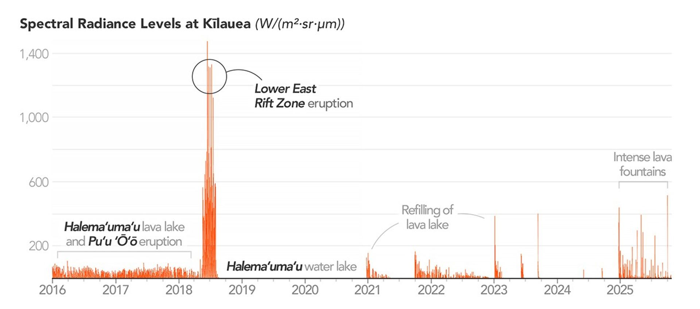

A Hot and Fiery Decade for Kīlauea
Of the hundreds of active volcanoes observed by NASA satellites since the early 2000s, Kīlauea stands out as one of the world’s leading emitters of thermal infrared energy. Observations from the Aqua and Terra satellites place it among the most persistently active volcanoes on Earth. Other major thermal emitters include Bárðarbunga in Iceland and Nyiragongo in the Democratic Republic of the Congo.
The chart above shows Kīlauea’s daily average spectral radiance from 2016 to 2025, highlighting both its frequent activity and dramatic variability. The data come from MODVOLC, an automated volcano monitoring system developed by scientists at the University of Hawaiʻi. MODVOLC processes observations from MODIS (Moderate Resolution Imaging Spectroradiometer) sensors to detect daily thermal anomalies, or “hot spots,” at volcanoes worldwide.
From 2016 to 2018, Kīlauea exhibited relatively low but continuous activity driven by long-lived eruptions at two vents. At Halema‘uma‘u, the summit crater, a lava lake stabilized and expanded to cover about 42,000 square meters (452,000 square feet), making it the world’s second-largest lava lake at the time. The lake frequently sloshed, spattered, and overflowed, generating persistent low-level thermal signals.
Simultaneously, lava erupted from Puʻu ʻŌʻō along the volcano’s East Rift Zone, where eruptions are most likely to occur. During this period, lava flows occasionally traveled all the way to the coastline, forming a growing lava delta at Kamokuna as molten rock entered the sea.
Conditions changed abruptly on April 30, 2018, when the floor of Puʻu ʻŌʻō’s crater collapsed, ending Kīlauea’s longest and most voluminous known lava outpouring in 500 years. Magma migrated eastward underground into the Lower East Rift Zone (LERZ), rather than flowing downslope toward the ocean as it had since 1983. Days later, fissures opened in Leilani Estates, and lava flows destroyed entire neighborhoods.
By the end of the three-month LERZ eruption, more than 320,000 Olympic-sized pools of lava had erupted, destroying 700 homes and causing up to $1 billion in economic losses. The sheer volume of lava pushed Kīlauea’s spectral radiance to more than ten times its 2016 baseline, producing a noticeable spike in Earth’s total volcanic thermal emissions.
After several quiet years, activity surged again beginning in December 2024. Intense eruptive episodes returned to Halema‘uma‘u every few weeks, often marked by towering lava fountains lasting several hours. One episode in November 2025 produced fountains reaching 1,000 feet (300 meters), while swirling plumes of gas and particles formed dramatic “volnados.”
On December 6, 2025, the 38th eruptive episode since December 2024 sent lava beyond Halema‘uma‘u’s rim and destroyed a U.S. Geological Survey camera site. Scientists attribute the renewed intensity to magma rich in dissolved gases, which rises and erupts explosively—much like a shaken bottle of soda.
According to MODVOLC data, these frequent surges often push Kīlauea’s spectral radiance to two to three times pre-2018 baseline levels. While Kīlauea has been dominated by relatively gentle effusive eruptions over the past two centuries, geologic records show that it periodically transitions into more explosive phases, as occurred between 1500 and 1800.
Understanding such transitions depends on long-term satellite observations. Systems like MODVOLC and MIROVA (Near Real Time Volcanic Hot Spot Detection System) allow researchers to track volcanic heat output over decades. As the Terra and Aqua missions age, both systems are being updated to incorporate data from newer VIIRS (Visible Infrared Imaging Radiometer Suite) sensors to ensure continuity.
“Long-term datasets and monitoring tools like these are absolutely critical,” said volcanologist Ian Flynn of the University of Pittsburgh. “They make it possible to study how volcanic activity changes over time and to better predict the thermal precursors of eruptions.”
Following the 2018 eruption, a water lake formed in Halema‘uma‘u in 2019, gradually deepening until a summit eruption in December 2020 boiled it away. Over the next three years, a series of small eruptions slowly refilled the lava lake—setting the stage for the dramatic activity seen today.